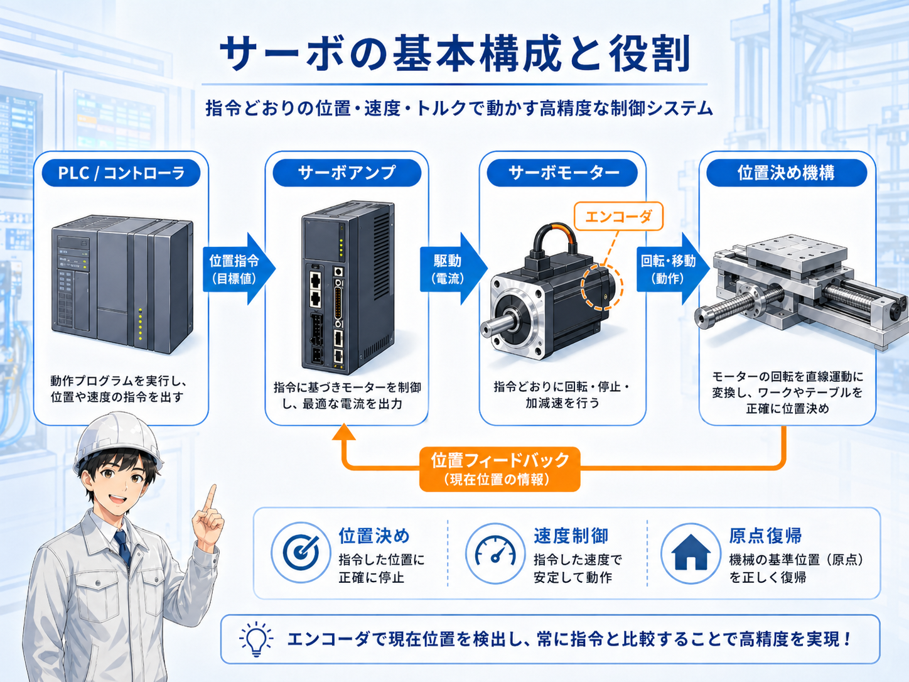
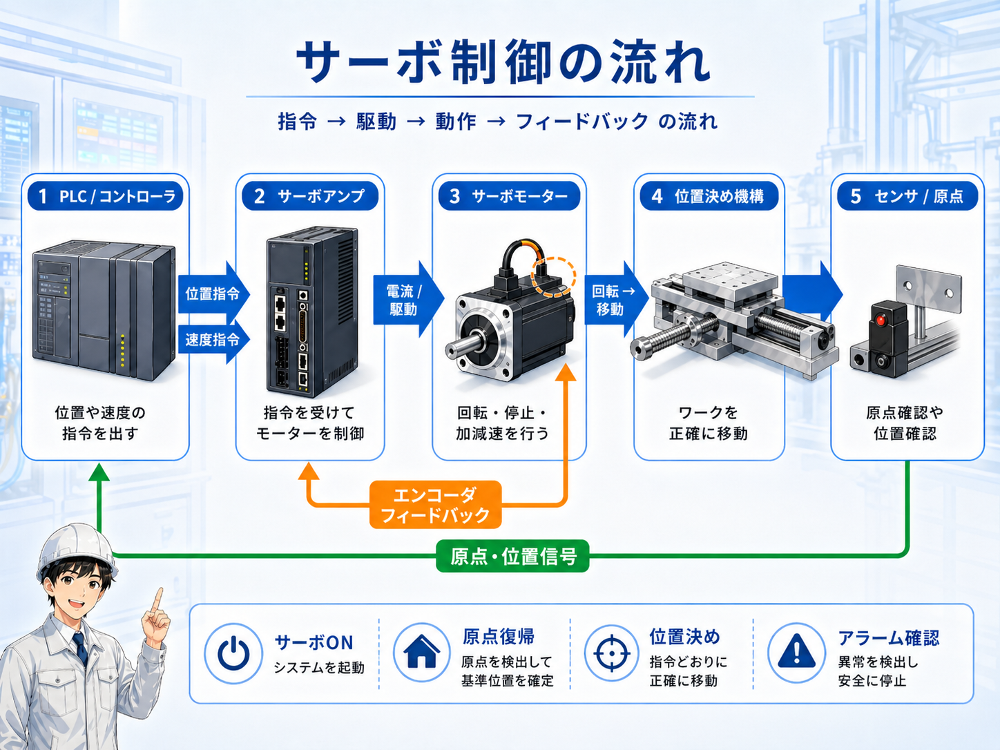
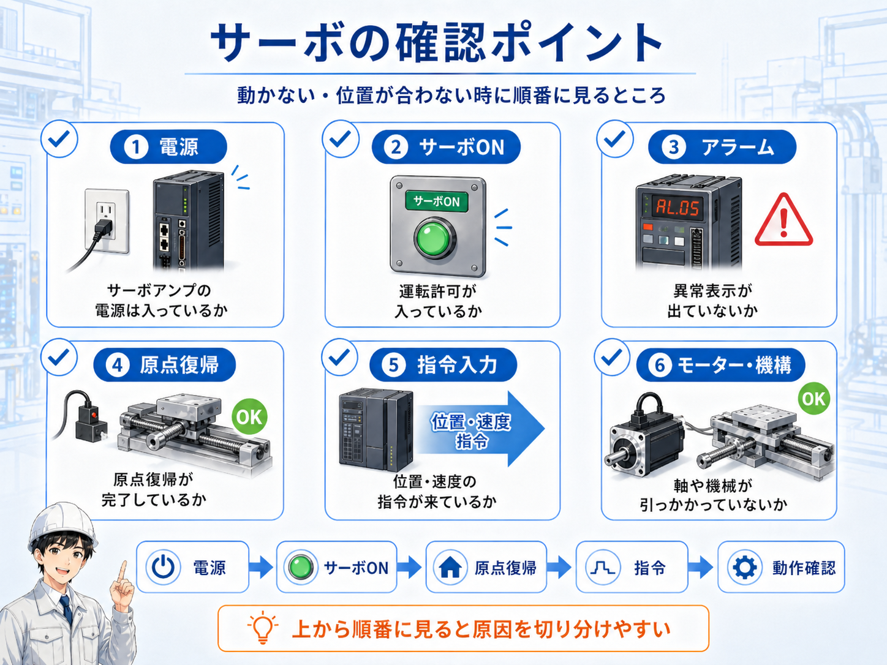

1. 先に結論
サーボモーターは、決めた位置まで正確に動かしたい時に使うモーターです。 ただ回るだけではなく、今どこにいるかを見ながら、目標位置や速度に合わせて動きます。
現場では、サーボモーター単体だけを見るよりも、PLCやコントローラ、サーボアンプ、エンコーダ、原点センサー、機械側の動きまでを ひとつの流れとして見ると理解しやすいです。
サーボは「回す」より「狙った位置へ動かす」と考える
モーターをただ回すだけなら、他のモーターやインバーターでも対応できる場面があります。 サーボは、位置決め、原点復帰、繰り返し精度が必要な動きでよく使われます。

先輩サーボは、モーター単体というより「位置を見ながら動かす仕組み」として見ると分かりやすいよ。

新人インバーターみたいに回転数を変えるだけ、という感じではないんですね。
2. サーボモーターとは
サーボモーターとは、指令された位置や速度に合わせて動くように制御されるモーターです。 多くの場合、サーボアンプと組み合わせて使い、モーター側のエンコーダから現在位置を返しながら制御します。
たとえば、部品を決まった位置へ移動する、テーブルを指定距離だけ動かす、ロボット軸を決まった角度へ動かす、といった用途で使われます。 「何秒回すか」ではなく、どこまで動かすかを見ているイメージです。
サーボモーターはサーボアンプとセットで見る
サーボアンプがモーターへ電流を出し、モーターが回転し、エンコーダが現在位置を返します。 この戻り情報を使って、狙った位置へ近づけていきます。
3. サーボの基本構成
サーボの基本は、PLCやコントローラから位置指令を出し、サーボアンプがモーターを駆動し、 エンコーダで現在位置を見ながら補正する流れです。

PLC / コントローラ
どの位置へ、どの速度で動かすかという指令を出します。
サーボアンプ
指令を受けて、サーボモーターへ必要な電流を出します。
サーボモーター
実際に回転し、ボールねじや機械を動かします。
エンコーダ
今の位置や回転状態を検出して、サーボアンプへ返します。
4. 普通のモーターやインバーターとの違い
普通のモーターは、電源を入れると回転し、主に「回す」ことが目的です。 インバーターは、周波数を変えることでモーターの回転数を変えやすくします。
一方でサーボは、回転だけでなく、位置・速度・加減速・停止位置を細かく見ながら制御します。 そのため、決められた位置へ正確に止めたい用途では、サーボが使われることが多いです。
| 種類 | 主な目的 | 現場での見方 |
|---|---|---|
| 普通のモーター | 回す | 電源を入れて回転させる用途。正確な停止位置までは別の仕組みが必要です。 |
| インバーター | 回転数を変える | 速度変更やソフトスタートに向いています。位置決め専用ではありません。 |
| サーボ | 位置を決めて動かす | 位置指令とフィードバックを使い、狙った位置へ動かします。 |
どちらが上位というより、用途が違う
インバーターはモーターの回転数制御に強く、サーボは位置決めや繰り返し動作に強いです。 設備の目的によって使い分けます。
5. サーボ制御の流れ
サーボ制御では、指令を出す側、駆動する側、実際に動く側、現在位置を返す側を分けて見ると分かりやすいです。 動かない時も、この流れに沿って確認すると原因を切り分けやすくなります。

- 位置指令：PLCやコントローラから目標位置や速度を出す
- 駆動：サーボアンプがモーターを動かす
- 動作：モーターが回転し、機械側が移動する
- フィードバック：エンコーダが現在位置を返す
- 原点信号：機械の基準位置を確認する
6. 現場でよく見る言葉
サーボまわりでは、位置決め、原点復帰、サーボON、アラーム、エンコーダなどの言葉がよく出てきます。 最初はすべてを細かく覚えるより、何の役割を持つ言葉かを分けて見るのがおすすめです。
サーボON
サーボアンプがモーターを動かせる状態にする運転許可のようなものです。
原点復帰
機械の基準位置を確認し、位置決めの基準を作る動作です。
位置決め
指定した位置へ移動し、そこで止める動作です。
アラーム
過負荷、エンコーダ異常、指令異常など、何かの異常を示す表示です。

新人サーボって言葉が多くて、最初はどこから見ればいいか迷います。

先輩まずは、電源、サーボON、原点復帰、指令、アラームを順番に見るといいよ。いきなりパラメータに行かない方が追いやすいね。
7. 動かない・位置が合わない時の確認ポイント
サーボが動かない、位置が合わない、原点復帰できない時は、サーボモーター本体だけを疑う前に、 電源、サーボON、アラーム、原点、指令、機械側を順番に確認します。

電源
サーボアンプに主電源や制御電源が入っているか確認します。
サーボON
運転許可信号が入っているか、非常停止や安全回路が落ちていないか見ます。
アラーム
サーボアンプの異常表示、過負荷、エンコーダ異常などを確認します。
原点復帰
原点センサーや原点復帰完了状態を確認します。
指令入力
PLCやコントローラから位置・速度指令が出ているか確認します。
機械側
ボールねじ、軸、ワーク、ガイドが引っかかっていないか確認します。
機械が動く可能性があるので、安全確認を先にする
サーボまわりを確認する時は、軸が急に動く可能性があります。 実機では設備仕様、社内手順、安全確認、メーカー資料に従って作業してください。
8. まとめ
サーボモーターは、位置決め制御でよく使われるモーターです。 サーボアンプから駆動され、エンコーダで現在位置を返しながら、指令された位置や速度に近づけて動きます。
最初は、サーボモーター単体を細かく見るより、PLC、サーボアンプ、モーター、エンコーダ、原点、機械側の流れをつかむと理解しやすいです。
- サーボは、狙った位置へ動かす用途に向いている
- サーボアンプとエンコーダの関係を見ると分かりやすい
- 動かない時は、電源・サーボON・原点・指令・アラーム・機械側を順番に見る